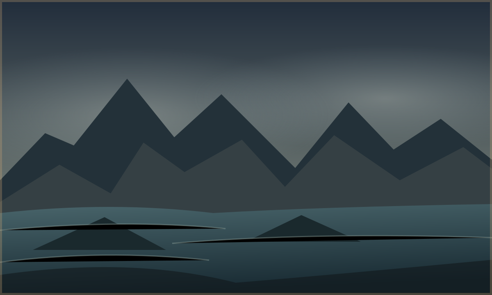

SAGAS OF MIDGARD · ATLAS
LOKACJA
Lokacja
Historia miejsca
Powiązane postacie
Wydarzenia w kronice
Wyłącznie informacje poznane w trakcie sagi
SAGA · ŚWIAT POSTACI
Portrety, powiązania i losy ludzi Północy.

ATLAS · ODKRYTE MIEJSCA
Świat, krainy i miejsca poznane przez bohaterów. Każda nowa wyprawa może dopisać kolejny rozdział.
ODKRYTE ZIEMIE
Miejsca znane bohaterom.
ZAPISANE W PAMIĘCI PÓŁNOCY
Opowieści o rozegranych czynach bohaterów. Nowe karty pojawią się wraz z sesjami.
Zapisujemy tylko wydarzenia znane drużynie. Przyszłe sceny, sekrety Skalda i niepotwierdzone pogłoski pozostają poza publiczną kroniką.